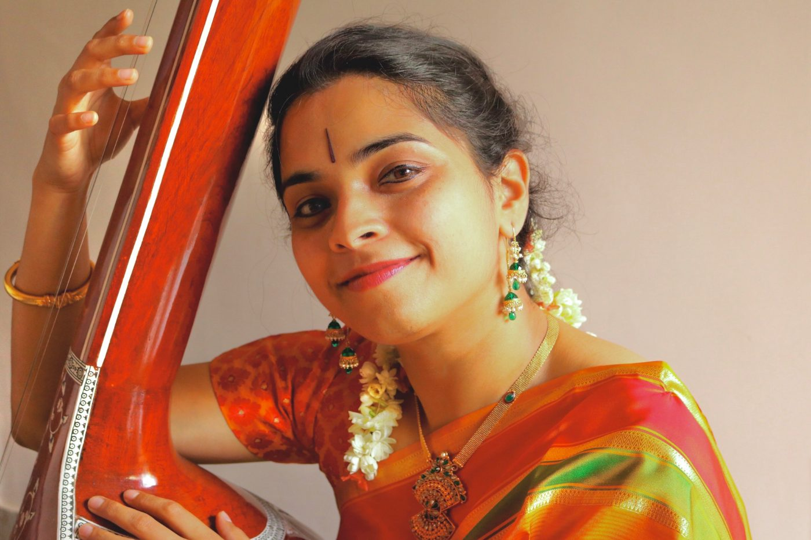

Course 01 · Voice
Carnatic Vocal
Build a steady voice, then the songs and raga sense to use it.
- Voice culture and shruti
- Sarali varisai and varnams
- Kritis of the Trinity
- Raga alapana and kalpanaswara